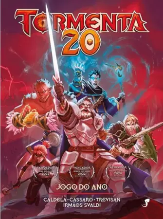
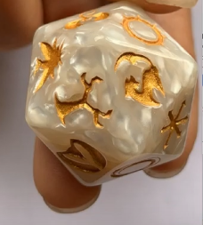

Tormenta 20: Explorando o RPG Épico
O que é Tormenta 20?

Tormenta 20 é a evolução de um sistema consagrado do RPG nacional, o "Tormenta RPG". Celebrando duas décadas de existência desse universo de fantasia, este sistema oferece uma experiência refinada e renovada aos jogadores. Baseado no mundo de Arton, um cenário repleto de magia, deuses, perigos e heróis lendários, Tormenta 20 é uma jornada que mergulha os participantes em um mundo vasto e repleto de possibilidades
Como Jogar Tormenta 20?
Ao ingressar em Tormenta 20, os jogadores assumem o papel de heróis lendários, embarcando em aventuras repletas de desafios e momentos épicos. O sistema simplificado, com mecânicas acessíveis e baseado no uso de dados de vinte faces (d20), permite aos jogadores explorarem suas narrativas e tomarem decisões enquanto o Mestre do Jogo (ou Narrador) guia a história, descreve os ambientes e interpreta os personagens que cruzam o caminho dos aventureiros
O que é necessário para jogar?
Para adentrar esse mundo de fantasia, é recomendado possuir o Livro Básico do jogo, uma fonte completa que abrange desde regras fundamentais até informações detalhadas sobre o mundo de Arton. Além disso, itens básicos como lápis, papel, dados (especialmente o d20, d6 e d10), e, claro, uma boa dose de imaginação são fundamentais para criar e viver as aventuras dentro desse universo
Papéis dos Participantes
- Jogadores: Estes são os heróis da história. Ao criar seus personagens, eles dão vida a guerreiros corajosos, feiticeiros poderosos, exploradores astutos e outros arquétipos, cada um com suas habilidades, histórias e motivações únicas. São eles que enfrentam os desafios, contribuindo ativamente para a história por meio de suas escolhas e ações.
- Mestre do Jogo: O Mestre é o arquiteto da narrativa. Cabe a ele construir o mundo, apresentar desafios, interpretar personagens secundários e, acima de tudo, guiar os jogadores em suas aventuras. É responsável por criar um ambiente dinâmico e envolvente, garantindo que todos os participantes mergulhem de cabeça na trama
Dados em Tormenta 20
No jogo, os dados desempenham um papel crucial. O d20, o dado de vinte faces, é o principal, determinando o sucesso ou fracasso das ações dos personagens. Além disso, dados como o d6 e d10 são utilizados para cálculos específicos, como danos, resolução de magias e outros aspectos mecânicos da aventura.
Tormenta 20 oferece não apenas um jogo, mas a oportunidade de criar narrativas memoráveis, explorar um mundo fantástico repleto de magia e desafios, além de possibilitar momentos épicos e inesquecíveis, tudo através da imaginação e da colaboração entre jogadores e o Mestre do Jogo